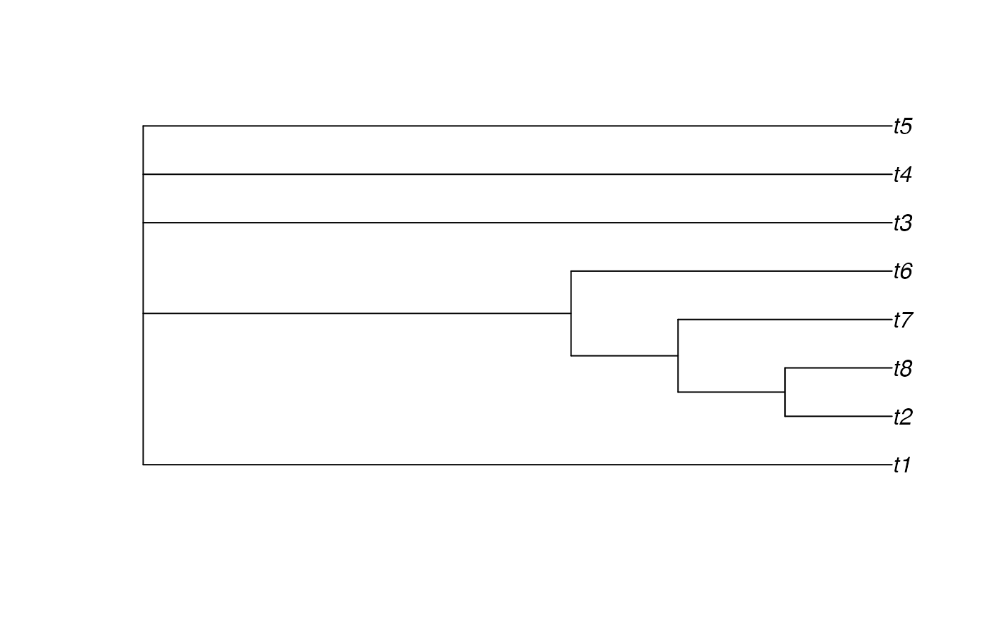

Construct a consensus tree that minimizes the sum of symmetric quartet distances to a set of input trees, using a greedy add-and-prune heuristic.
Arguments
- trees
An object of class
multiPhylo: the input trees. All trees must share the same tip labels. Trees may be non-binary (polytomies are handled correctly).- init
Character string specifying the initial tree:
"majority"(default): start from the majority-rule consensus."empty": start from a star tree (purely additive)."extended": start from the extended (greedy) majority-rule consensus.
- greedy
Character string specifying the greedy strategy:
"best"(default): evaluate all candidates and pick the single highest-benefit action at each step."first": pick the first improving action encountered (faster but may give a slightly worse result).
Details
The majority-rule consensus minimizes the sum of Robinson-Foulds distances
to the input trees. Analogously, QuartetConsensus() finds an approximate
median tree under the symmetric quartet distance
(Takazawa et al. 2026)
, which counts
both false-positive and false-negative resolved quartets equally.
Because the quartet distance gives greater weight to deep branches (which resolve more quartets), quartet consensus trees tend to be more resolved than majority-rule trees, especially when phylogenetic signal is low.
The algorithm pools all splits observed across input trees and maintains a quartet profile: for each of the \(\binom{n}{4}\) quartets, a count of how many input trees resolve it as each of the three possible topologies. Splits are greedily added to (or removed from) the consensus when doing so reduces the total symmetric quartet distance to the input trees. Candidate splits must be compatible with all currently included splits (four-gamete test).
The function supports trees with up to 100 tips. For larger trees, the explicit quartet enumeration becomes prohibitively expensive.
References
Takazawa Y, Takeda A, Hayamizu M, Gascuel O (2026). “Outperforming the majority-rule consensus tree using fine-grained dissimilarity measures.” bioRxiv. doi:10.64898/2026.03.16.712085 .
Examples
library(TreeTools)
# Generate bootstrap-like trees
trees <- as.phylo(1:20, nTip = 8)
# Quartet consensus
qc <- QuartetConsensus(trees)
plot(qc)

# Compare resolution with majority-rule
mr <- Consensus(trees, p = 0.5)
cat("Majority-rule splits:", NSplits(mr), "\n")
#> Majority-rule splits: 3
cat("Quartet consensus splits:", NSplits(qc), "\n")
#> Quartet consensus splits: 3